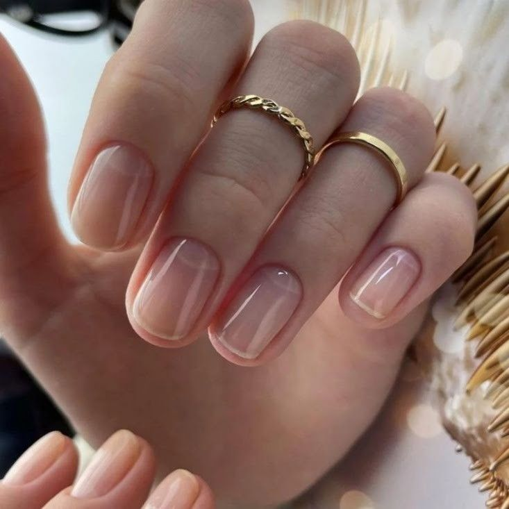
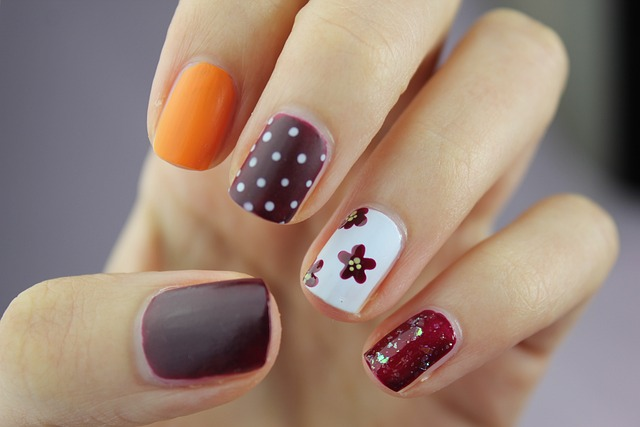
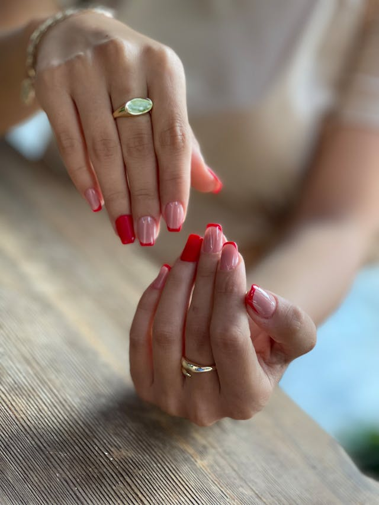
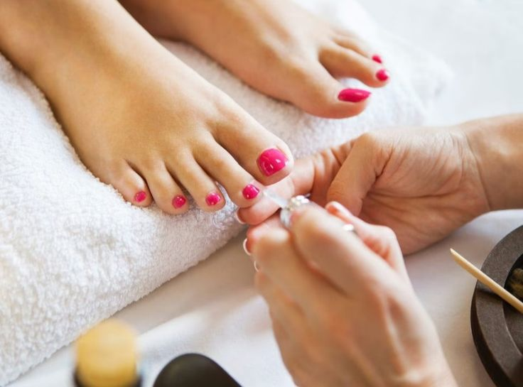

Manikűr:
A kézápolás az ápolt megjelenés és jó közérzet alapja, amely esztétikus és egészséges kezet biztosít.
Manikűröm természetes megoldásokat kínál azok számára, akik szép körömformát és egészséges körömágyat szeretnének. Ideális választás például egészségügyi dolgozóknak vagy zeneművészeknek, akik nem használhatnak színes anyagokat.

Gél lakkozás
A gél lakkozás ideális választás, ha természetes hosszúságú körmöket szeretnél, de tartós és ápolt megjelenést keresel. A géllakk UV fényre köt meg, így azonnal tartós és strapabíró, akár hetekig is problémamentesen viselhető. Nem vékonyítja el a körmöt, sőt, erősítést és védelmet nyújt.
Kérhetsz francia, ombre vagy babyboomer technikát, a régi géllakkot pedig igény szerint oldószerrel vagy reszeléssel távolítom el.

Műköröm építés
A műköröm építés tökéletes megoldás, ha saját körmöd nem elég erős, vagy hosszabbat szeretnél, de nem tudod megnöveszteni. Porcelán vagy zselés technikával készítem el a kívánt formájú és hosszúságú körmöket, akár francia, színes, babyboomer vagy natúr stílusban.
A természetességet és nőiességet előtérbe helyezve tartós és gyönyörű körmöket alkotok, igény szerint egyedi díszítéssel, mintákkal vagy kövekkel. Ez a szolgáltatás biztosítja a hosszú távú, ápolt megjelenést és maximális kényelmet.

Pedikűr
A pedikűr nemcsak esztétikai, hanem egészségügyi szempontból is fontos része a lábápolásnak. A kezelés során a láb bőrének és körmeinek ápolását végzem, eltávolítom az elhalt hámréteget, formázom a körmöket, és igény szerint lakkozást is készítek.
Ideális választás, ha felfrissítenéd lábaidat, és szeretnél ápolt, egészséges megjelenést biztosítani számukra. Egy jó pedikűr nemcsak kényeztet, hanem hozzájárul a láb komfortérzetéhez és higiéniájához is.